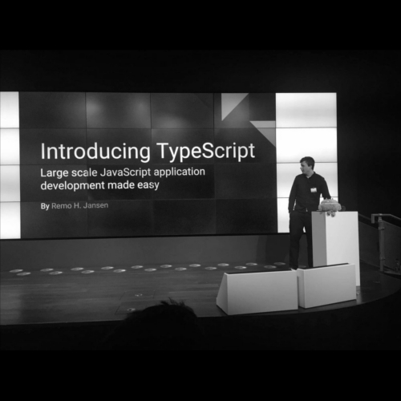
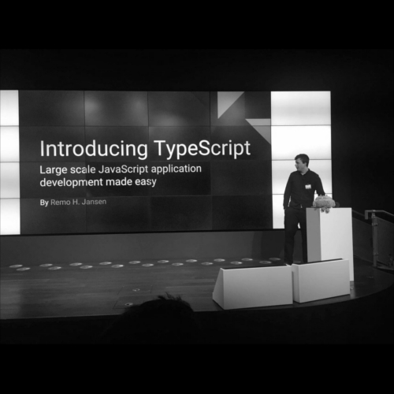

This book is a end-to-end guide to TypeScript 2.x and its entire ecosystem. You will start off by understanding the TypeScript type system, functions, asyncrhonous programing, the runtime, decorators and much more with the help of practical examples. Following this, you will learn about both the object-oriented programming (OOP) and the functional programming (FP) paradigms as well as both frontend development (React and Angular) and backend development (Node.js and Express). Finally, you will learn how to some of the most popular automation tools in the TypeScript ecosystem such as Webpack.
By the end of this book, you will have learned enough to to build a fullstack TypeScript web application from scratch.
Get familiar with the TypeScript basics. This chapter explores the purpose, main features and benefits of the TypeScript programming language.
Learn how to make the most out of the TyeScript type anotations and its type inferance system. This chapter will teach you how to use powerul features shuch as union types or mapped types.
Learn how to work with functions in depth. This chapter will teach you how to take adventage of the power of functions and asynchronous programming in TypeScript.
Learn the core concepts of the Object-Oriented Programming (OOP) paradigm shuch us polimorfisim, inheritance or encapsulation. This chapter also explores some OOP best practices shuch as the SOLID principles.
Learn how to work with application dependencies and third party dependencies as well as type definitions. This chapter explores multiple module systems such as CommonJS or ES6 modules and concepts like dependey injection.
Learn how the JavaScript runtime works and gain a good understanding of concepts such us the event loop, closures r hoisting.
Learn the core building blocks of the functional programing paradigm, including concepts such us function composition, function partial application or referential transparency.
Learn how to cosume or declare decorators and how to use the decorators to create and read metadata that can be used to power tools such as testing frameworks or inversion of control containers.
Learn how to automate certain task of your development workflow and reduce the number of integration issues using tools such as TsLint, Webpack, Gulp and npm scripts.
Learn how the availablility of resources can affect the performance of a TypeScript application and how to use the Node.js inspector and the Chrome Development tools to analyze the performance of a TypeScript application.
Learn how to implement automated tests like unit tests or end-to-end test powered by tools such as Mocha, Chai, Sinon, Supertest and Karma.
Learn how to leverage the TypeScript language services to create your own developent tools.
Learn how to develop RESTful APIs powered by Node.js and TypeScript.
Learn how to develop single-page web applications powered by Angular and TypeScript.
Learn how to develop single-page web applications powered by React and TypeScript.
Remo H. Jansen is a Microsof MVP, fullstack JavaScript and TypeScript engineer, open source contributor, entrepreneur, technology lover, gamer, and Internet enthusiast. Remo is originally from Seville, Spain, but currently lives in Dublin, Ireland, where he has a full-time job in the aviation finance industry.
Remo is the author of InversifyJS and has been working on large-scale JavaScript applications for 10 years, from flight booking engines to investment management solutions. Remo is an active member of the TypeScript community, he is organizer of the Dublin TypeScript and Dublin Open Source meetups.
Remo has previously worked on other Packt Publishing titles:
- Co-author (2016). TypeScript: Modern JavaScript Development ISBN 9781787289086
- Author (2015). Learning TypeScript ISBN 9781783985548
- Technical reviewer (2015). Mastering TypeScript ISBN 9781784399665
More from Remo:
 

"This is an amazing book not to mention the only one that covers the latest version of typescript. It goes beyond typescript and explains many important concept in object-oriented programming and JavaScript"
"I am a senior JavaScript developer and developed in action script 3 for many years so typing was not something new to me, but I was still able to pick up a lot of good information such as generators reflection and more!"
"Don't walk but run and get this book! TypeScript is without a doubt the future of JavaScript. You will learn how to bring structure to Javascript to ease your development with making large scale applications"
"The author wastes no time introducing the core features of TypeScript to automating your workflow with automation tools. Any javascript developer would benefit from this book"
"WOW! I picked this book up using my Packt subscription and can't put it down. The material flows and is easy to follow along with, I never used Typescript before but found it EXTREMELY USEFUL in web application development"
"The book deserves five stars because it pre-much covers everything. I'm sure this book is going to pick up an audience"
Exploit the features of TypeScript to develop and maintain captivating web applications with ease.

© 2018 Remo H. Jansen
All Rights Reserved